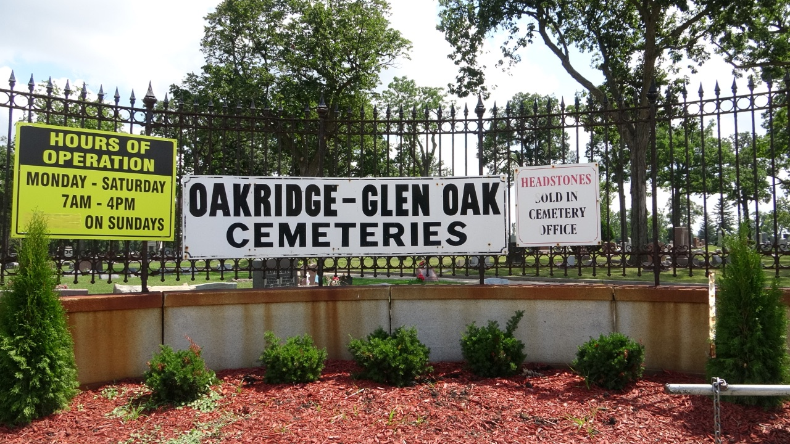

Oakridge Cemetery

Oakridge Cemetery is located near Chicago in the village of Hillside. The village of Hillside is located fifteen miles west of Chicago’s loop and is the largest nonsectarian mausoleum in Cook County. Over fifteen Blues musicians are buried here including Howlin’ Wolf. Oakridge’s address is 4301 West Roosevelt Road, Hillside, IL, 60162.